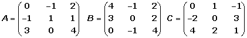
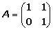
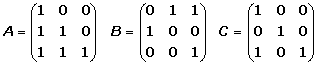
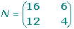

Ejercicios de matrices
1Dadas las matrices:

Calcular:
A + B; A − B; A x B; B x A; At.
2Sean las matrices:

Efectuar las siguientes operaciones:
(A + B)2; (A − B)2; (B)3; A · Bt · C.
3Dadas las matrices:

1Justificar si son posibles los siguientes productos:
1(At · B ) · C
2(B · Ct ) · At
2Determinar la dimensión de M para que pueda efectuarse el producto A · M · C
3Determina la dimensión de M para que Ct · M sea una matriz cuadrada.
4 Demostrar que: A2 − A − 2 I = 0, siendo:

5Sea A la matriz  . Hallar An , para n ∈
. Hallar An , para n ∈ 
6Por qué matriz hay que premultiplicar la matriz
 para que resulte la matriz
para que resulte la matriz
 .
.
7Hallar todas las matrices que conmuten con la matriz:

8Calcular la matriz inversa de:

9Calcular la matriz inversa de:

10Calcular el rango de la matriz siguiente:

11Hallar el rango de la matriz siguiente:
12Calcular el rango de la matriz siguiente:

13Siendo:

Calcular el valor de X en las siguientes ecuaciones:


14Siendo:

Resolver la ecuación matricial:
A X + 2 B = 3 C
15Resolver; en forma matricial, el sistema:

16Obtener las matrices A y B que verifiquen el sistema:

17Una empresa de muebles fabrica tres modelos de estanterías: A, B y C. En cada uno de los tamaños, grande y pequeño. Produce diariamente 1000 estanterías grandes y 8000 pequeñas de tipo A, 8000 grandes y 6000 pequeñas de tipo B, y 4000 grandes y 6000 pequeñas de tipo C. Cada estantería grande lleva 16 tornillos y 6 soportes, y cada estantería pequeña lleva 12 tornillos y 4 soportes, en cualquiera de los tres modelos.
1 Representar esta información en dos matrices.
2 Hallar una matriz que represente la cantidad de tornillos y de soportes necesarios para la producción diaria de cada uno de los seis modelos−tamaño de estantería.
18Una fábrica produce dos modelos de lavadoras, A y B, en tres terminaciones: N, L y S. Produce del modelo A: 400 unidades en la terminación N, 200 unidades en la terminación L y 50 unidades en la terminación S. Produce del modelo B: 300 unidades en la terminación N, 100 unidades en la terminación L y 30 unidades en la terminación S. La terminación N lleva 25 horas de taller y 1 hora de administración . La terminación L lleva 30 horas de taller y 1.2 horas de administración . La terminación S lleva 33 horas de taller y 1.3 horas de administración .
1 Representar la información en dos matrices.
2 Hallar una matriz que exprese las horas de taller y de administración empleadas para cada uno de los modelos.
- 1
- 2
- 3
- 4
- 5
- 6
- 7
- 8
- 9
- 10
- 11
- 12
- 13
- 14
- 15
- 16
- 17
- 18
Ejercicio 1 resuelto
Dadas las matrices:
Calcular:
A + B; A − B; A x B; B x A; At.


Ejercicio 2 resuelto
Sean las matrices:
Efectuar las siguientes operaciones:
(A + B)2; (A − B)2; (B)3; A · Bt · C.


Ejercicio 3 resuelto
Dadas las matrices:
1 Justificar si son posibles los siguientes productos:
1 (At · B ) · C
(At3 x 2 · B2 x 2 ) · C3 x 2 = (At · B )3 x 2 · C3 x 2
No se puede efectuar el producto porque el número de columnas de
(At · B ) no coincide con el nº de filas de C.
2 (B · Ct ) · At
(B2 x 2 · Ct2 x 3 ) · At3 x 2 = (B · C )2 x 3 · At3 x 2 =
= (B · Ct · At ) 2 x 2
2 Determinar la dimensión de M para que pueda efectuarse el producto A · M · C
A3 x 2 · Mm x n · C3 x 2 m = 2 n = 3
3 Determina la dimensión de M para que Ct · M sea una matriz cuadrada.
Ct2 x 3 · Mm x n m = 3 n = 3
Ejercicio 4 resuelto
Demostrar que: A2 − A − 2 I = 0, siendo:
Ejercicio 5 resuelto
Sea A la matriz . Hallar An , para n 

Ejercicio 6 resuelto
Por qué matriz hay que premultiplicar la matriz
 para que resulte la matriz
para que resulte la matriz
 .
.
Ejercicio 7 resuelto
Hallar todas las matrices que conmuten con la matriz:
Ejercicio 8 resuelto
Calcular la matriz inversa de:
1 Construir una matriz del tipo M = (A | I)
2 Utilizar el método Gauss para transformar la mitad izquierda, A, en la matriz identidad, y la matriz que resulte en el lado derecho será la matriz inversa: A−1.
| F2 − F1 | F3 + F2 |
 |
|
| F2 − F3 | F1 + F2 |
 |
|
| (−1) F2 | La matriz inversa es: |
 |
Ejercicio 9 resuelto
Calcular la matriz inversa de:
1 Construir una matriz del tipo M = (A | I)

2 Utilizar el método Gauss para transformar la mitad izquierda, A, en la matriz identidad, y la matriz que resulte en el lado derecho será la matriz inversa: A−1.

Ejercicio 10 resuelto
Calcular el rango de la matriz siguiente:
F1 − 2 F2

F3 − 3 F2

F3 + 2 F1

Por tanto r(A) =2.
Ejercicio 11 resuelto
Hallar el rango de la matriz siguiente:
F3 = 2F1
F4 es nula
F5 = 2F2 + F1
r(A) = 2.
Ejercicio 12 resuelto
Calcular el rango de la matriz siguiente:
F2 = F2 − 3F1
F3 = F3 − 2F1

Por tanto r(A) = 3 .
Ejercicio 13 resuelto
Siendo:
Calcular el valor de X en las siguientes ecuaciones:


Ejercicio 14 resuelto
Siendo:
Resolver la ecuación matricial:


Ejercicio 15 resuelto
Resolver; en forma matricial, el sistema:


Ejercicio 16 resuelto
Obtener las matrices A y B que verifiquen el sistema:
Multiplicamos la segunda ecuación por −2

Sumamos miembro a miembro

Si multiplicamos la primera ecuación por 3 y sumamos miembro a miembro obtenemos:

Ejercicio 17 resuelto
Una empresa de muebles fabrica tres modelos de estanterías: A, B y C. En cada uno de los tamaños, grande y pequeño. Produce diariamente 1000 estanterías grandes y 8000 pequeñas de tipo A, 8000 grandes y 6000 pequeñas de tipo B, y 4000 grandes y 6000 pequeñas de tipo C. Cada estantería grande lleva 16 tornillos y 6 soportes, y cada estantería pequeña lleva 12 tornillos y 4 soportes, en cualquiera de los tres modelos.
1 Representar esta información en dos matrices.
Filas: Modelos A, B, C Columnas: Tipos G, P

Matriz de los elementos de las estanterías:
Filas: Tipos G, P Columnas: T, S

2 Hallar una matriz que represente la cantidad de tornillos y de soportes necesarios para la producción diaria de cada uno de los seis modelos−tamaño de estantería.
Matriz que expresa el número de tornillos y soportes para cada modelo de estantería:

Ejercicio 18 resuelto
Una fábrica produce dos modelos de lavadoras, A y B, en tres terminaciones: N, L y S. Produce del modelo A: 400 unidades en la terminación N, 200 unidades en la terminación L y 50 unidades en la terminación S. Produce del modelo B: 300 unidades en la terminación N, 100 unidades en la terminación L y 30 unidades en la terminación S. La terminación N lleva 25 horas de taller y 1 hora de administración . La terminación L lleva 30 horas de taller y 1.2 horas de administración . La terminación S lleva 33 horas de taller y 1.3 horas de administración.
1 Representar la información en dos matrices.
Matriz de producción:
Filas: Modelos A y B Columnas: Terminaciones N, L, S

Matriz de coste en horas:
Filas: Terminaciones N, L, S Columnas: Coste en horas: T, A
2 Hallar una matriz que exprese las horas de taller y de administración empleadas para cada uno de los modelos.

 Ejercicios
Ejercicios